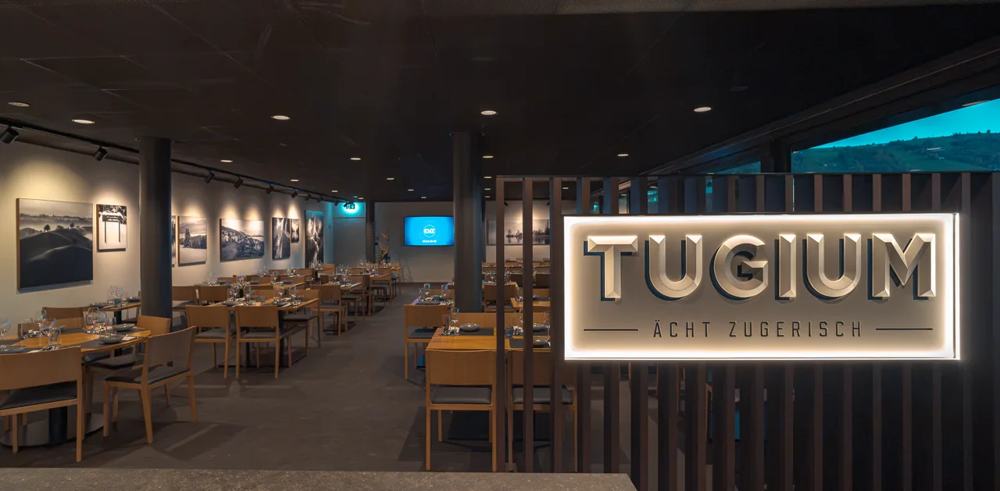
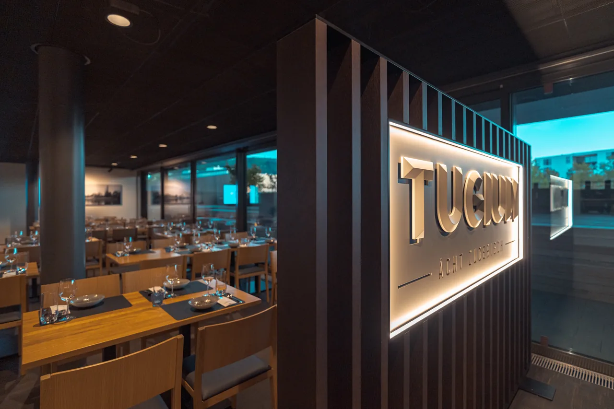
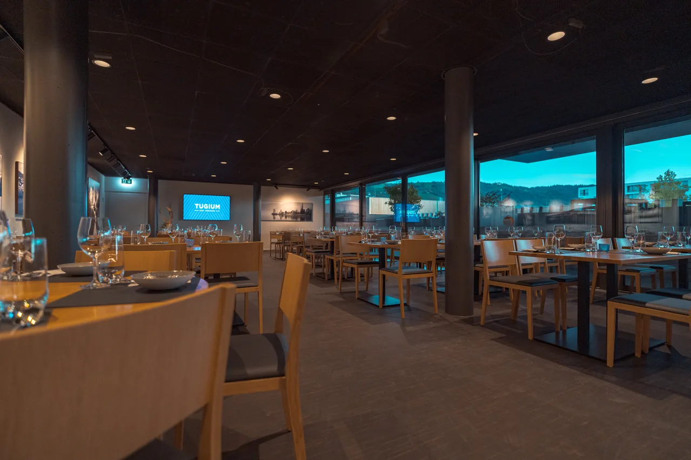
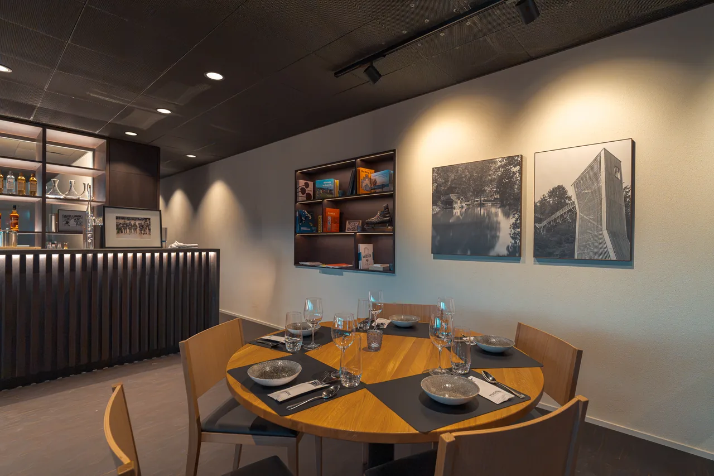
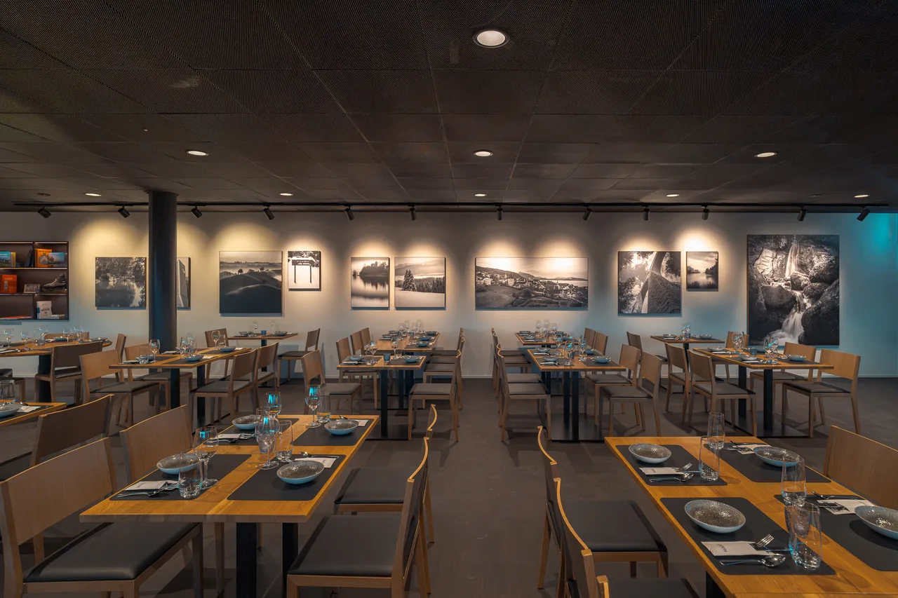

Ein neuer Ort mit regionaler Identität
Mit der Verlegung der ehemaligen «Sportsbar 67» ins Erdgeschoss des südlichen Anbaus entsteht im Obergeschoss Raum für eine neue gastronomische Identität. Die bestehende Fläche wird erweitert, räumlich neugestaltet und durch einen direkten Zugang zum Dachgarten aufgewertet.
Unter dem Namen «Tugium», der lateinischen Bezeichnung für Zug, entsteht ein Restaurant, das regionale Verbundenheit mit zeitgemässer Gastlichkeit verbindet. Warme Holzböden, sorgfältig ausgewähltes Mobiliar und eine neu gestaltete Bar prägen die einladende Atmosphäre. Fotografien der Zuger Region von René Schädler ergänzen das Interieur und verankern den Raum in seiner lokalen Identität.
Mit traditioneller Schweizer Küche und dem fliessenden Übergang zum Dachgarten entsteht ein eigenständiger Begegnungsort, der Architektur, Kulinarik und regionale Geschichte miteinander verbindet.




